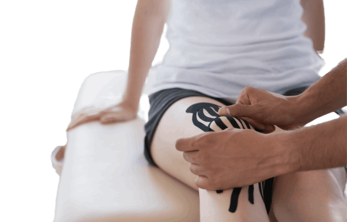
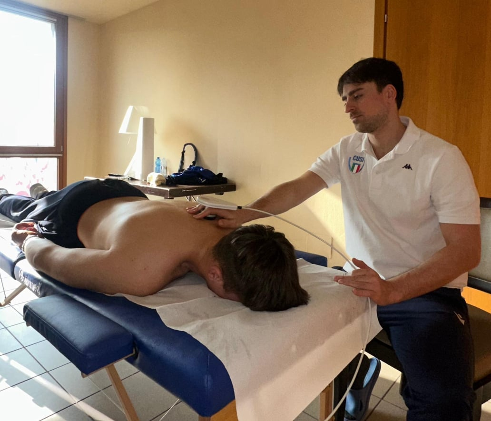
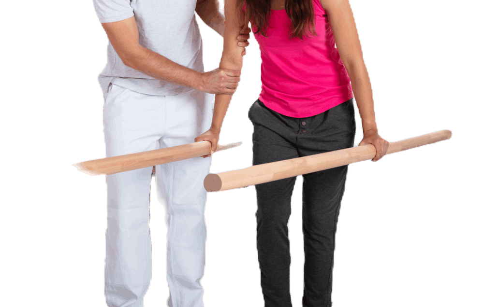

Recupero infortuni sportivi
mediante programmi di recupero personalizzati in base a caratteristiche del paziente e sport praticato.

Riabilitazione delle disfunzioni muscoloscheletriche che causano dolore e limitazione delle attività

Rieducazione neuromotoria di condizioni neurologiche con percorsi specifici per il recupero delle funzioni motorie